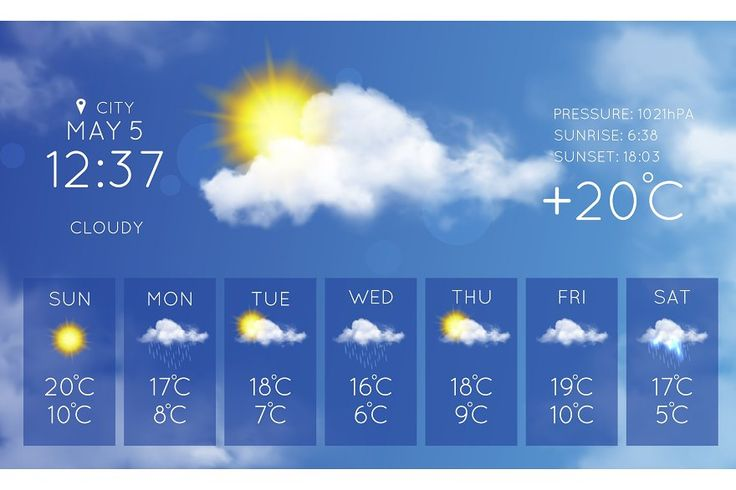
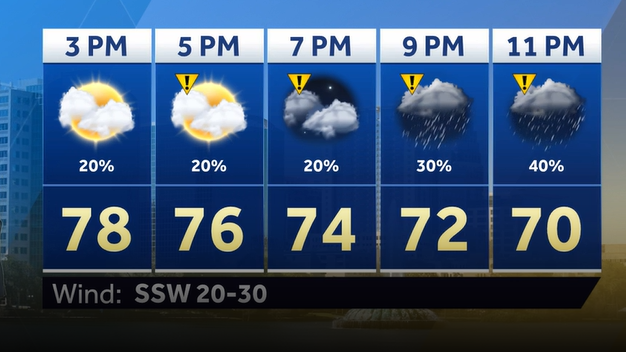
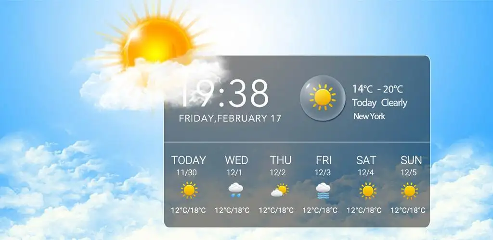

Business Problem
Users often need quick and reliable weather information in a simple interface. Many weather platforms are overloaded with advertisements and unnecessary information, making it difficult to access essential forecasts.
Responsive web application developed with React and the OpenWeather API, providing real-time weather conditions, forecast data and an intuitive user experience. through interactive business intelligence visualizations.

Users often need quick and reliable weather information in a simple interface. Many weather platforms are overloaded with advertisements and unnecessary information, making it difficult to access essential forecasts.
Developed a responsive React application integrated with the OpenWeather API, allowing users to search any city and instantly view current weather conditions and forecast information.
Executive indicators providing a real-time overview of admissions, operational costs and healthcare performance.
Interactive filters allowing users to analyze data by department, insurance provider and time period.
Visual reports designed to identify bottlenecks, trends and opportunities for operational improvement.


